이미지별 색 톤 구성
배경색만 뽑은 단독 팔레트를 폐기했다. 평균을 내면 Wise 한 브랜드가 57%를 먹는다. 대신 세로 = 샘플 한 장, 가로 = 그 이미지 안에서 쓰인 색 톤으로 다시 만들었다.
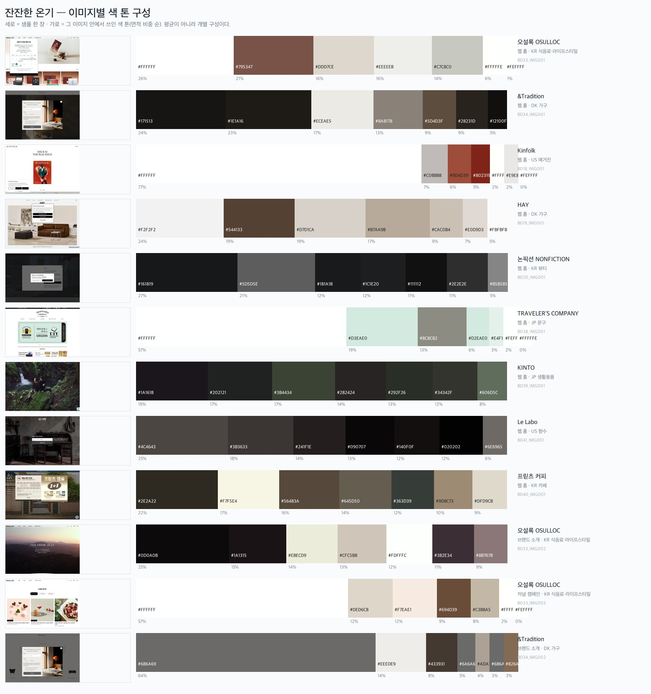
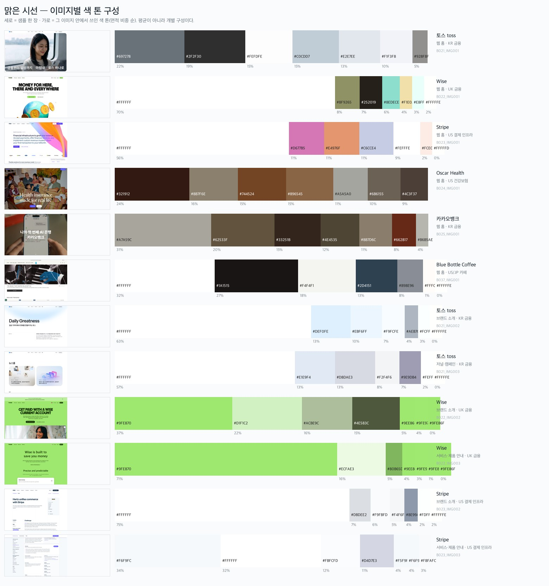
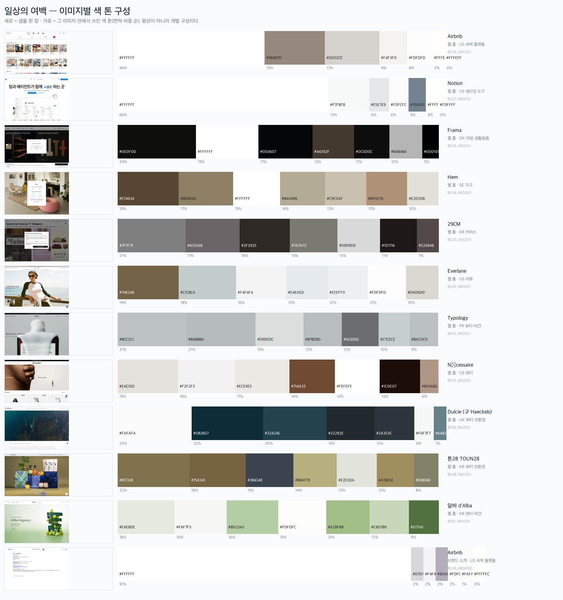
색은 좁게, 명도는 넓게
한 이미지 안의 톤들이 서로 인접한 색이다. Typology #BCC2C1 #B4BBBA #D9DEDC, 29CM 전부 회색조,
Nécessaire 베이지 변주, 달바 연두 변주, Dulcie 짙은 청록 변주. 대비색을 나란히 쓰지 않는다.
| 무드 | 색상 분산 | 명도 폭 |
|---|---|---|
| 잔잔한 온기 | 0.104 | 0.58 |
| 맑은 시선 | 0.087 | 0.49 |
| 일상의 여백 | 0.065 (최소) | 0.65 (최대) |
임차in케어 적용 — 그린 하나를 쓰되 명도 단계를 여러 개 만든다. 브랜드북 4-1의 70:25:5는 면적 규정이라 충돌하지 않는다. 한계 — 색상 분산에 유채 톤 1개짜리 축퇴 사례(0.000)가 섞여 있다.
국내 11곳 중 8곳이 Pretendard 계열
크롭은 브라우저에서 해당 요소만 2배 해상도로 잘라낸 것이고, 값은 getComputedStyle 실측이다.
국내는 헤드라인이 35px로 작아 위계 대비가 2.3배뿐이다.
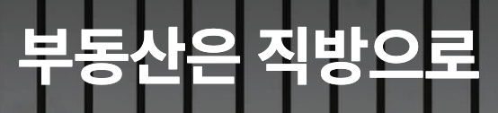
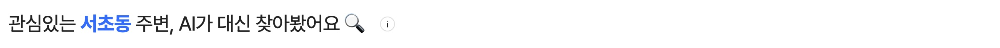
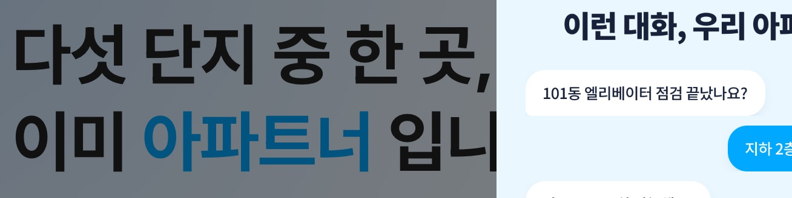
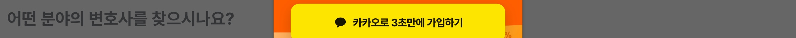
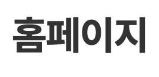
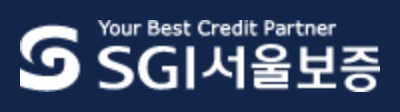
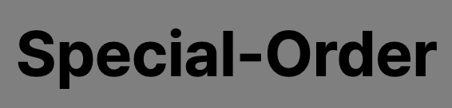
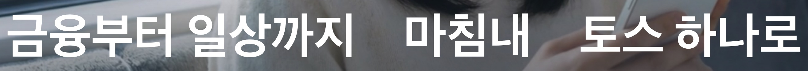
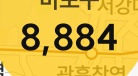
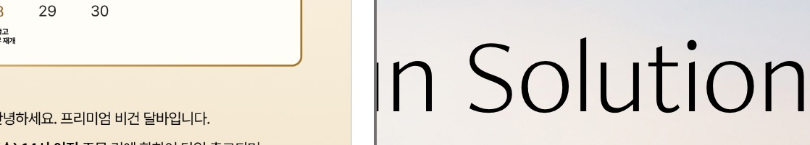
서체로는 차별화가 안 된다
직방·다방·아파트너·로톡·오설록·카카오뱅크·29CM·톤28이 전부 Pretendard 계열이다. 자체 서체는 토스(Toss Product Sans)뿐, 명조는 달바뿐. 임차in케어 브랜드북 4-3의 프리텐다드 단일 규정은 국내 표준을 따르는 것이다. 차별화는 크기·굵기·여백에서 찾아야 한다.
해외는 크고 대비가 높다 (4.7배)
같은 카테고리인데 헤드라인이 66.5px로 두 배 가깝다.
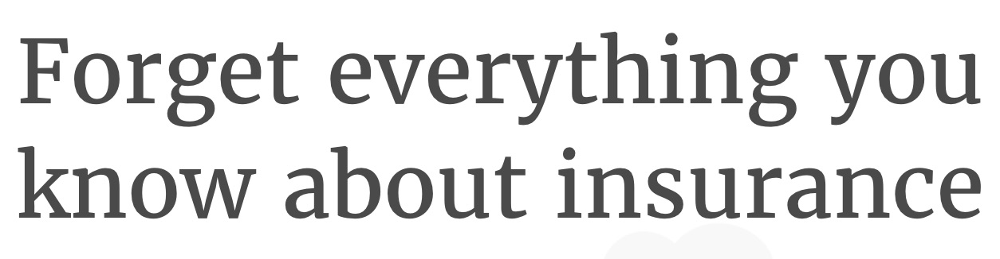
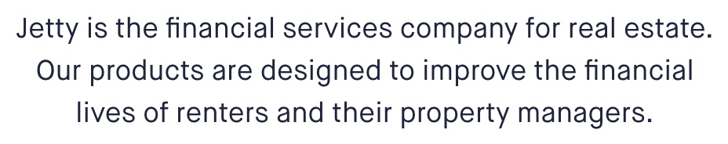
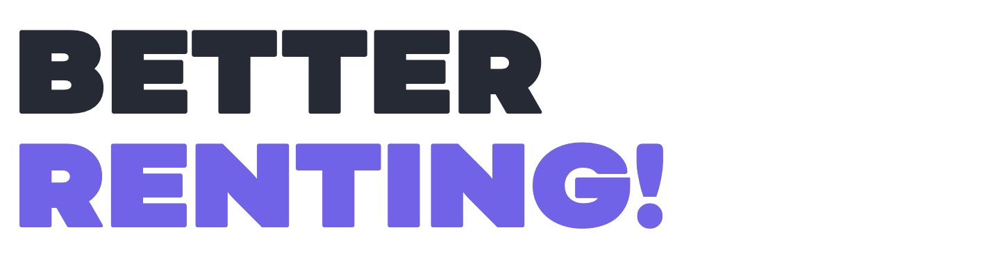
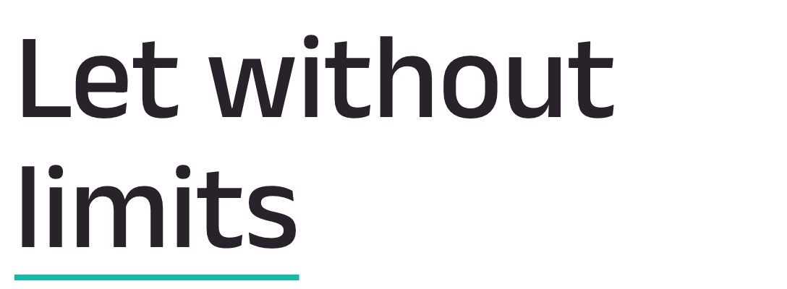
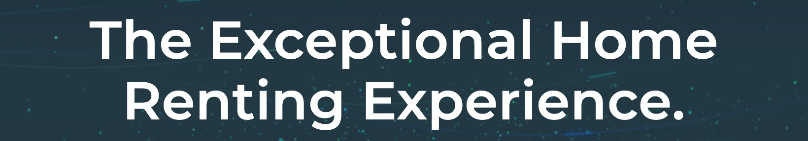
| 구분 | 헤드라인 | 본문 | 대비 |
|---|---|---|---|
| A축 국내 | 35.4px | 15.2px | 2.3배 |
| A축 해외 | 66.5px | 14.1px | 4.7배 |
| 잔잔한 온기 | 27.0px | 13.7px | 2.0배 |
| 일상의 여백 | 49.7px | 15.9px | 3.1배 |
| 맑은 시선 | 77.9px | 14.3px | 5.4배 |
Canopy
Bicyclette ultra 100px w900 uppercase → 대비 7.1배
Lemonade · Oscar · Kinfolk
Merriweather 55px w400
아파트너 · HUG · Jetty
-0.728px -1.5px -0.612px — 큰 글자에서 조인다
달바 · Typology
74px w300 80px w500
Canopy
100px / 82px — 줄이 겹친다
블록 수는 같고, 간격이 절반이다
가로선은 행별 변화량으로 찾은 내용 블록의 경계다. 숫자는 블록 사이 간격(원본 높이 대비 %).

| 구분 | 블록 수 | 평균 간격 | 최대 간격 |
|---|---|---|---|
| A축 국내 | 6.4개 | 4.9% | 10.7% |
| A축 해외 | 6.3개 | 8.0% | 16.9% |
| 잔잔한 온기 | 5.2개 | 7.4% | 15.2% |
| 맑은 시선 | 6.2개 | 7.6% | 15.2% |
| 일상의 여백 | 5.1개 | 6.4% | 11.5% |
여백은 고르게 넉넉한 게 아니라 한 곳에 몰아준 큰 공백이다
블록 수는 국내·해외가 같다(6.4 vs 6.3). 정보량은 비슷한데 크기와 간격이 절반이라 빽빽해 보인다.
불균등도는 무드를 가르지 못한다
최대÷평균 비율이 1.83~2.11로 차이가 작다. 국내·해외 간격 차이(4.9% vs 8.0%)가 훨씬 뚜렷하다. 블록·간격은 캡처 픽셀에서 읽은 시각적 블록이지 CSS 값이 아니다.
히어로 이미지 유형과 스타일
왼쪽 위일수록 사진 질감이 강하고 오른쪽 아래로 갈수록 평면(일러스트·색면·텍스트)이다.
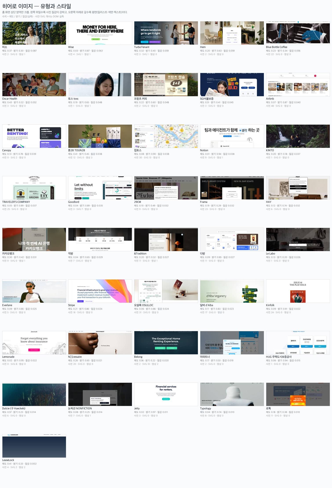
집토스·다방·아파트너·Notion·Goodlord·HUG·로톡·Belong
제품 화면을 그대로 히어로에
Lemonade·Canopy·Wise·Stripe·Jetty·LeaseLock
사진 없이 개념을 전달한다
톤28·달바·Typology·TRAVELER'S·오설록·Frama·HAY·Le Labo·&Tradition·Hem
사물을 세워 찍는다
미소·토스·SGI·Everlane·Nécessaire·카카오뱅크
한 사람, 카메라 의식
Oscar Health·TurboTenant·KINTO
둘 이상의 관계
Dulcie·KINTO
사람이 없거나 작다
Kinfolk·29CM·프릳츠
지면을 그대로
Airbnb
선택지를 나열한다
카테고리가 유형을 결정한다 — 무드가 아니라
국내 부동산·보증은 거의 전부 UI 스크린샷, 해외 렌터 서비스는 거의 전부 일러스트·타이포다. Lemonade·Jetty·Canopy·LeaseLock·Goodlord에 사진이 사실상 없다. 같은 보장 카테고리인데 Oscar는 인물 관계 사진, 국내 SGI는 연예인 단독 컷이다.
| 구분 | 사진 | SVG | 영상 | alt 누락 |
|---|---|---|---|---|
| A축 국내 | 8.4장 | 1.6개 | 0.1 | 45% |
| A축 해외 | 2.1장 | 4.3개 | 0.6 | 15% |
종횡비 — 맑은 시선은 가로 64%(와이드 히어로), 일상의 여백은 정방 44%(제품 그리드). alt 누락률은 접근성 준수 판정이 아니다.
세 컨셉을 가로질러 반복되는 것
무드가 달라도 반복되는 것만 모았다. 3회 이상만 올린다.
한 색의 명도 변주
대비색을 나란히 쓰지 않는다 — Typology·29CM·Nécessaire·달바·Dulcie
위계 장치를 하나만 쓴다
크기면 크기, 색이면 색 — 토스·Stripe·Oscar·카뱅
여백을 한 곳에 몰아준다
Typology 37% · 토스 24% · Dulcie 29%
조형은 선과 사각형뿐
장식 도형이 없다 — &Tradition·Stripe·Dulcie·카뱅·Notion·29CM
아이콘이 적다
절제된 브랜드일수록 아이콘 수가 적다. Blue Bottle은 파란 점 하나
브랜드 지면과 판매 지면이 분리된다
프릳츠·오설록·TRAVELER'S·아로마티카
공통이 아닌 것 — 서체(세리프/산세리프가 갈린다), 어두움(잔잔한 온기만 26.4%), 사진 유무(카테고리가 결정하지 무드가 결정하지 않는다).
임차in케어 — 수치로 말하면
| 요소 | 지금 정해진 것 | 리서치가 가리키는 방향 | 충돌·위험 |
|---|---|---|---|
| 서체 | 프리텐다드 단일 (4-3) | 국내 8곳이 같은 서체 — 차별화 불가 | 차별화를 다른 데서 찾아야 |
| 위계 | 규정 없음 | 국내 2.3배는 낮다 → 3~4배 | 필수 안내 16블록과 충돌 |
| 간격 | 규정 없음 | 4.9% → 7~8% | 한 화면 정보량이 줄어든다 |
| 색 | 그린 5% (4-1) | 그린 하나 + 명도 단계 여러 개 | 없음 (면적 규정이라) |
| 사진 | "아무 일 없는 날들" (4-4) | 국내 관행은 UI 스크린샷 8.4장 — 다르게 가면 낯설다 | 촬영 자산 0장 |
| 조형 | 심볼 파생형만 (4-4) | 공통 요소와 일치 | 없음 |
| 아이콘 | 규정 없음 | 줄이는 쪽 | 상태색 3종과의 관계 미정 |